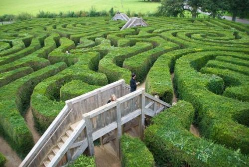
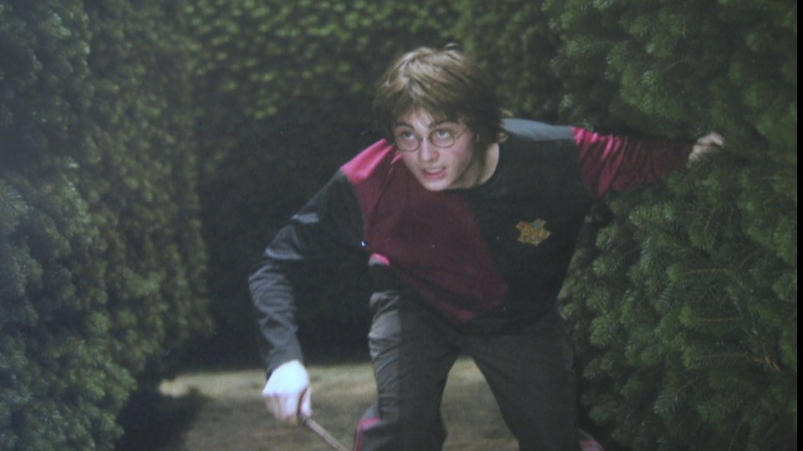
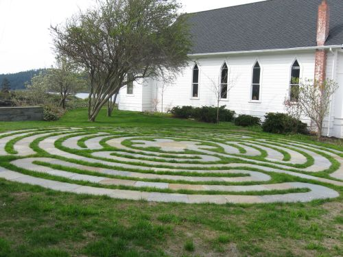
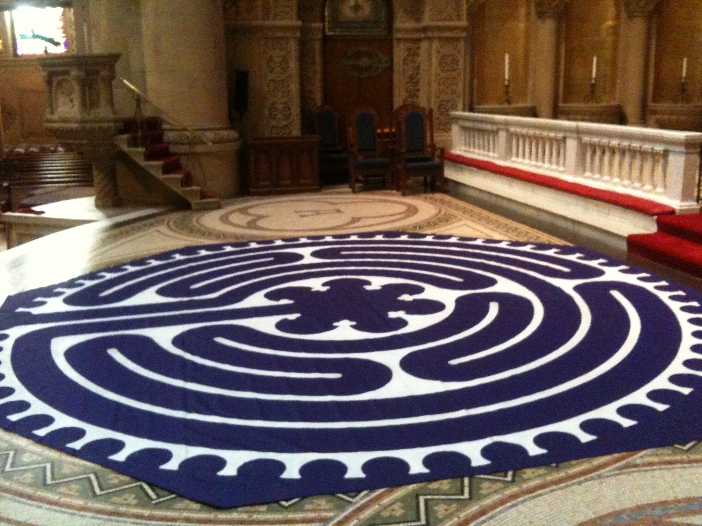
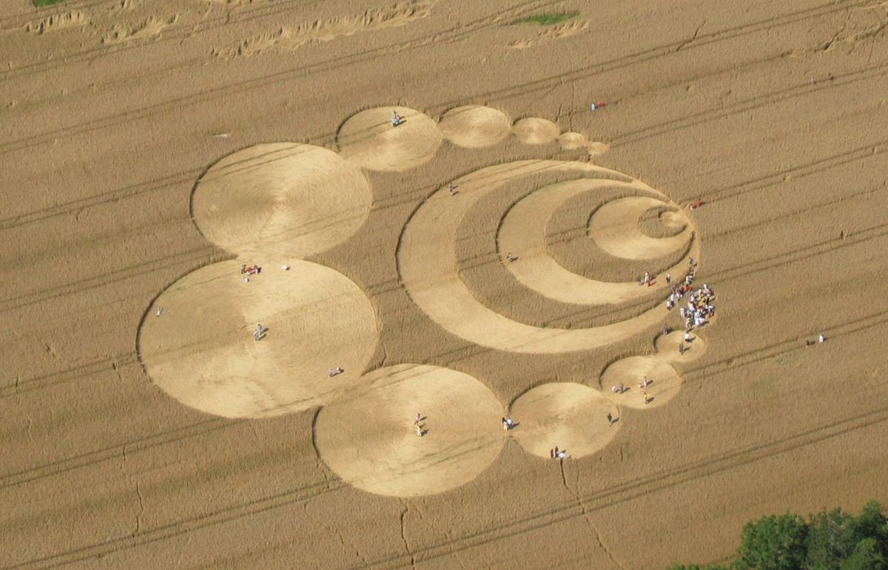
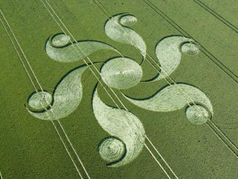

Hedge Mazes
When you think of the maze in popular culture, perhaps films such as The Shining (1980) and Labyrinth (1986) come to mind. But long before Jack pursued young Danny in a hotel hedge maze, these puzzling structures were an intriguing subject for artists, filmmakers, and authors. The maze is often a symbol of danger, of confusion, or, as in Harry Potter and the Goblet of Fire, a challenge for characters on a quest.
The hedge maze was once a mainstay of British formal gardens and estates. Known as "the most famous maze in the history of the world," the Hampton Maze was originally planted from hornbeam in 1690 for William of Orange and is still there—it now includes a half mile of paths. Hedge mazes became popular all over England in the 18th century, their popularity waning as a craze for "natural" gardens overtook them in the 19th century. In their prime, hedge mazes provided privacy and entertainment for the members of the royal court at grand estates.
Church Mazes
Labyrinths are often used as a way to force the body and mind into a state of calm where one can achieve spiritual peace. One of the most famous examples of a labyrinth in a religious setting is the one at Chartres Cathedral, built in the 13th century. Later generations of Roman Catholics covered it, worried about the ancient, pagan origins of the labyrinth. Today it is available for visitors to walk through on certain days, including Midsummer Day on June 21.
Today, the shape of the labyrinth creates contemplative moments at sites such as public parks and schools. Used as part of meditation and other health programs, labyrinths at hospitals and retreat centers can help facilitate relaxation.
Crop Circles
A crop circle or crop formation is a pattern created by flattening a crop,usually a cereal. The term was first coined in the early 1980s by Colin Andrews. Crop circles have been described as all falling "within the range of the sort of thing done in hoaxes" by Taner Edis, professor of physics at Truman State University.Although obscure natural causes or alien origins of crop circles are suggested by fringe theorists, there is no scientific evidence for such explanations, and human causes are consistent for all crop circles.
The concept of "crop circles" began with the original late-1970s hoaxes by Doug Bower and Dave Chorley. They said that they were inspired by the Tully "saucer nest" case in Australia, where a farmer found a flattened circle of swamp reeds after observing a UFO.